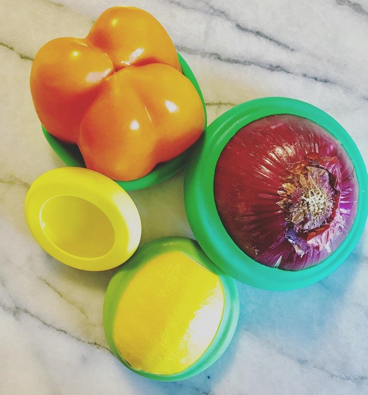
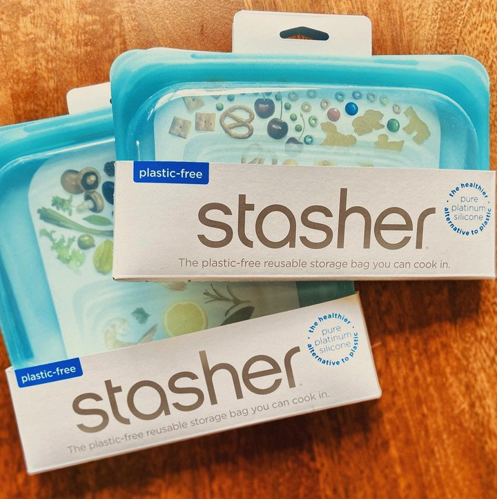

Our Favorite Eco-Friendly Products
In a world where everything is at our disposal, it’s hard to make a conscious effort in ‘going green’ and be environmentally friendly. But we're here to make it easy on you, that’s why we've complied our favorite eco-friendly products below! These products will save you money overtime and it’s a great start in creating a greener home & lifestyle.
Now let's cheers to that!
Being Green On-the-Go:
Reusable Produce Bags & Grocery Bags - This lightweight mesh is built to last and can hold a lot of produce! Ditch the plastic produce bags at the store; they are bad for the environment AND rip most of the time!

Kitchen Wrap:
Food Huggers - Say goodbye to storing leftovers & lunches in plastic bags or accidentally letting your food go to waste because its hard to see what you have when you open your fridge. Food Huggers are easy to use and clean!
Reusable Food Wraps - Washable and compostable! Use on-the-go or keep your food fresh. Made with 100% cotton and organic food-grade beeswax.
Stasher Bags - 100% Food Grade Silicone. They can be used in the microwave, oven, dishwasher and freezer, plus they come in a variety of sizes and beautiful colors. No need to buy Ziplock or storage bags anymore!
Other Household Items:
Zero Waste Towels - Premium bamboo reusable towels absorb 3x their weight in liquid! Zero waste towels for the kitchen or any area of your home for that matter!
Silicon straws - Compatible with any size tumbler and made with high quality silicon

MakeUp Remover Pads - Non-toxic makeup remover pads. All you need to do is add water and remove your makeup. Purchasing these will eliminate the cost of makeup wipes and/or pricey eye makeup remover, win-win if you ask me!
Envelop Rechargeable Batteries - Recharge up to 2100 times AND when not in use they maintain up to 70% of their charge after 10 years!